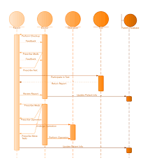
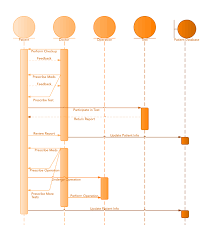

Diagramas estructurales
Representan la estructura estática del sistema.

Diagramas comportamentales
Describen el comportamiento dinámico y la interacción entre objetos.
Representan la estructura estática del sistema.
Describen el comportamiento dinámico y la interacción entre objetos.
